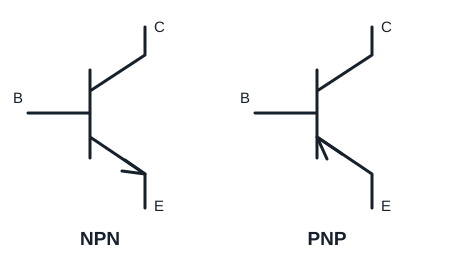
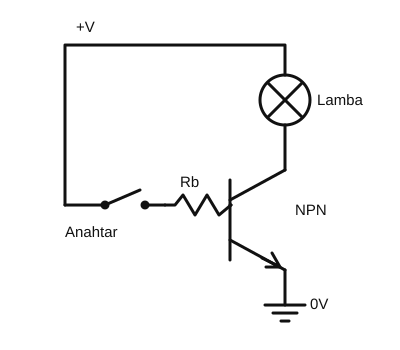

Transistör ve Ölçümleri
Yapısı :
Transistörler PNP ve NPN olmak üzere iki çeşittir. Emiter, Kollektör ve Beyz olmak üzere 3 adet bağlantı ucu vardır. En çok kullanılan yarı iletken devre elemanıdır ve devrelerde bir anahtar görevi görür. PNP transistörlerde kollektör eksi (-), Emiter artı (+) ve beyz ucuda emitere göre eksi (-), kollektöre göre artı (+) polarize alır. NPN tipinde ise durum tam tersidir.
Transistörler birbirlerini tetikleyecek şekilde bağlandığında akım kazancı elde edebilen devre elemanlarıdır.

Yukarıdaki şekiller PNP ve NPN tipi transistörlerin devre şemalarında kullanılan sembollerini göstermektedir.

Yukarıdaki şekilde ise basit bir transistör devre şeması görülmektedir. Bu devrede anahtar kapatıldığında transistörün beyz ucu doğru polarize alacağından transistör iletime geçecek ve emiter-kollektör arası kısa devre olarak üzerinden akım geçmesini sağlayacaktır. Böylece transistörün tetiklenmesi ile devredeki lamba yanmış olacaktır. Anahtar açıldığında transistörde yalıtıma geçecek ve lamba sönecektir.
Sağlamlık Kontrolü :
Ohm metrenin X1 konumunda veya yüksek güçlü transistör test ediliyorsa X1K konumunda siyah uç transistörün beyz ucuna kırmızı uç ise ilk önce emiter ucuna daha sonrada kollektör ucuna bağlandığında düşük direnç gösteriyor ve kırmızı uç beyz ucuna siyah uç ise önce kollektöre sonrada emitere bağlandığında yüksek direnç gösteriyorsa ayrıca emiter-kollektör arası ölçü aletinin her iki yönünde de yüksek direnç gösteriyorsa transistör sağlamdır ve PNP tipidir.
Siyah uç transistörün beyz ucuna kırmızı uç ise ilk önce emiter ucuna daha sonrada kollektör ucuna bağlandığında yüksek direnç gösteriyor ve kırmızı uç beyz ucuna siyah uç ise önce kollektöre sonrada emitere bağlandığında düşük direnç gösteriyorsa ayrıca emiter-kollektör arası ölçü aletinin her iki yönünde de yüksek direnç gösteriyorsa transistör sağlamdır ve NPN tipidir.